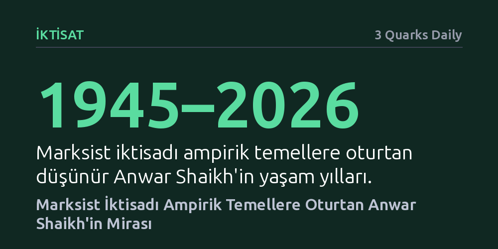

IKTISAT · 3 Quarks Daily · 2026-10-12
2026'da vefat eden Anwar Shaikh, klasik ve Marksist iktisat kategorilerini ampirik verilerle işler kılarak modern kapitalizmin yasalarını kanıtladı. Çalışmaları, Smith, Ricardo ve Marx'ın mirasını kısa vadeli piyasa dinamikleriyle bütünleştiren en kapsamlı kuramsal çerçeveyi sunuyor.
Marksist iktisadın soyut bir felsefi eleştiri değil, modern kapitalizmin kriz ve birikim dinamiklerini ampirik verilerle kanıtlayan sağlam bir bilimsel çerçeve olduğunu gösterir.

2026 yılında hayatını kaybeden Anwar Shaikh, sol entelektüel dünyanın ve çağdaş heterodoks iktisadın en parlak kuramcılarından biriydi. Birçok iktisatçı tarafından kendi kuşağının en yetkin Marksist iktisatçısı ve Karl Marx'tan bu yana bu geleneğe en derin kuramsal katkıyı sunan düşünür olarak değerlendiriliyordu. Shaikh, kapitalizmin içsel çelişkilerini neoklasik modellerin varsayımsal dünyasından çok daha gerçekçi biçimde açıklayan kapsamlı bir alternatif inşa etti.
Shaikh'in entelektüel serüveni sıra dışı bir küresel birikime dayanıyordu. 1945'te Pakistan'ın Karaçi kentinde doğan iktisatçı, diplomat olan babasının mesleği sebebiyle çocukluk ve ilk gençlik yıllarını Türkiye, Orta Doğu ve Güneydoğu Asya'da geçirdi. Bu erken dönem gözlemleri, ona kapitalizmin küresel çeperini ve farklı toplumsal yapıları yakından tanıma imkânı verdi.
Yükseköğrenimini Amerika Birleşik Devletleri'nde tamamlayan Shaikh, 1965 yılında Princeton Üniversitesi'nden mühendislik lisans derecesi aldı; 1973'te ise Columbia Üniversitesi'nde iktisat doktorasını bitirdi. Doktora dönemi, ABD'de Vietnam Savaşı karşıtı eylemlerin, yurttaşlık hakları mücadelesinin ve feminist hareketlerin tepe noktasına ulaştığı yıllardı. Kuşağının öne çıkan pek çok parlak genci gibi bu hareketlerin etkisiyle Marksizme yönelen Shaikh, mühendislikten getirdiği analitik disiplini siyasal iktisada vakfetti.
Shaikh'in iktisat teorisindeki en belirleyici hamlesi, Adam Smith, David Ricardo ve Karl Marx ile anılan klasik siyasal iktisat damarını modern dünyada yeniden canlandırmak oldu. Ana akım iktisadın piyasaların kendiliğinden kusursuz dengeye ulaştığı tezini reddederek, klasik kuramın çatışmalı ve dinamik sermaye birikimi anlayışını analizlerinin merkezine koydu.
Klasik yaklaşımı sadece uzun vadeli soyut eğilimlerle sınırlı bırakmayan düşünür, bu çerçeveyi John Maynard Keynes'in incelediği kısa vadeli dalgalanmalara da başarıyla uyguladı. Efektif talep yetersizlikleri, istihdam değişimleri ve çevrimsel krizler gibi olguların klasik iktisat araçlarıyla çözümlenebileceğini kanıtlayarak, iki farklı ekolü tek bir kapsayıcı şemsiye altında birleştirdi.
Marksist iktisat geleneğinin en çetin engeli, Marx'ın Kapital'de kurguladığı soyut kategorilerin gerçek dünya verileriyle nasıl ölçüleceği sorunuydu. Shaikh, literatürde adeta 'herkülvari bir görev' sayılan bu engeli aştı; artı değer, sömürü oranı ve sermayenin organik bileşimi gibi kavramları ampirik olarak işler hale getirdi.
Geliştirdiği yöntemlerle modern kapitalizmin ampirik düzenliliklerinin piyasa tesadüfleriyle değil, bizzat Marx'ın tarif ettiği sermaye birikim mekanizmalarıyla yönetildiğini somut istatistiklerle gösterdi. Böylece kapitalist ekonomilerin kriz ve kâr dinamiklerini tartışılmaz bir veri tabanına kavuşturdu.
Shaikh'in akademik üretimi, Marksizmin yalnızca felsefi veya ahlaki bir eleştiri olduğu yönündeki yerleşik algıyı yıktı. Marksist iktisat tarihinde bu kuramı onun kadar ileri taşıyan ve ayakları yere basan böylesine güvenli bir ampirik zemine oturtan başka bir figür bulmak güçtür.
Geride bıraktığı miras, piyasa mitlerine kapılmadan kapitalizmin gerçek işleyiş yasalarını anlamak isteyen iktisatçılar için hem teorik derinliği hem de ampirik tutarlılığı olan vazgeçilmez bir kılavuz niteliğindedir.